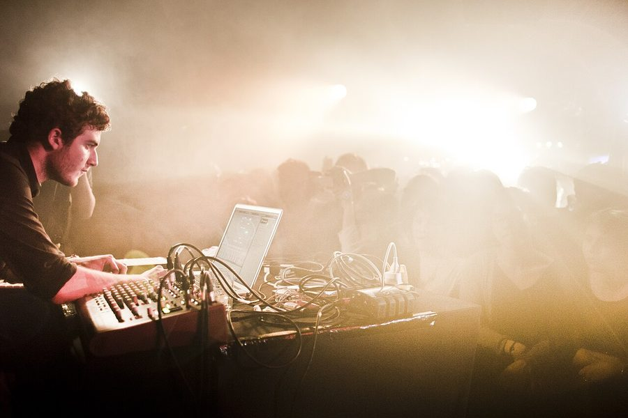

Watch: Nicolas Jaar & more in New York mini-doco



“If we look back, we might say that in 2013 things started to radically change, and the color of the music that is coming out of New York.” So says Nicolas Jaar in the opening frames of a new mini-documentary from Red Bull Music Academy. It comes at the closing end of the Academy’s residency in New York City, where over the past month it’s hosted a series of lectures, showcases and performances from some of dance culture’s finest.
Titled Rough Around The Edges, the bite-sized doco takes a visual look at some of the factors that drive creativity in the city, and its ongoing importance to electronic music. “There’s something about finding yourself through exhaustion. And New York is such an exhausting city,” Jaar reflects. “This is why I can make music here, I can really push myself to do maybe unhealthy things even.”
In addition, the doco talks to a number of figureheads from labels like Minimal Wave and UNO, as well as hosting footage from some rather tasty looking NYC parties, as well as the city itself. Watch the video below…
The Red Bull Music Academy was set up in New York City during May, hosting lectures and interviews with the likes of Richie Hawtin and Giorgio Moroder among many others.